Part 2: DNA foundation models
AI Days 2026
Faculty of Biotechnology and Food Engineering
Technion Israel Institute of Technology
Mattan Hoory
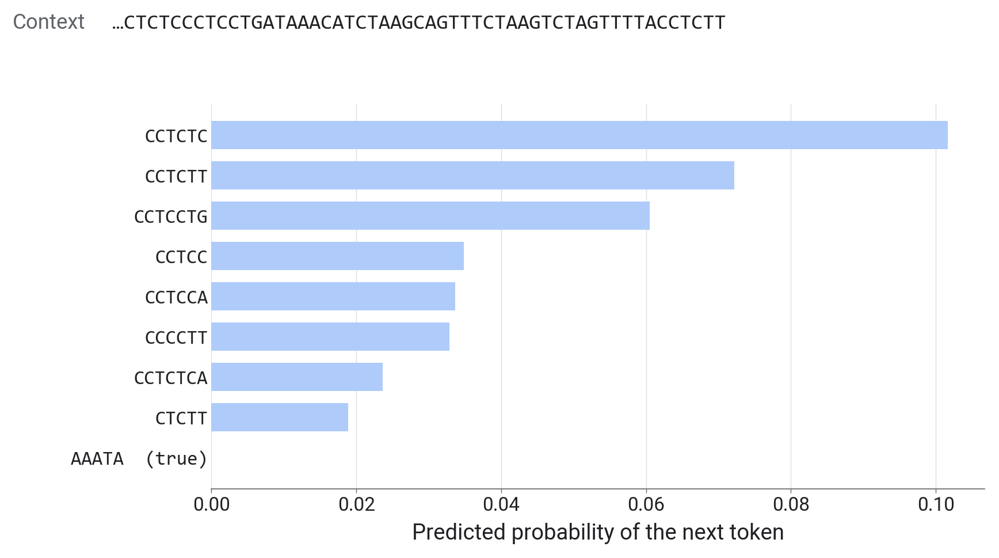
| Stage | CNN (part 1) | DNA language model |
|---|---|---|
| Tokenization | single letters | k-mers or BPE tokens |
| Embedding | one-hot, 4 numbers | learned, 256 numbers |
| Body | 2 convolution layers | transformer, 8 layers |
| Prediction head | linear → 1 logit | linear → token probabilities, or 1 logit |
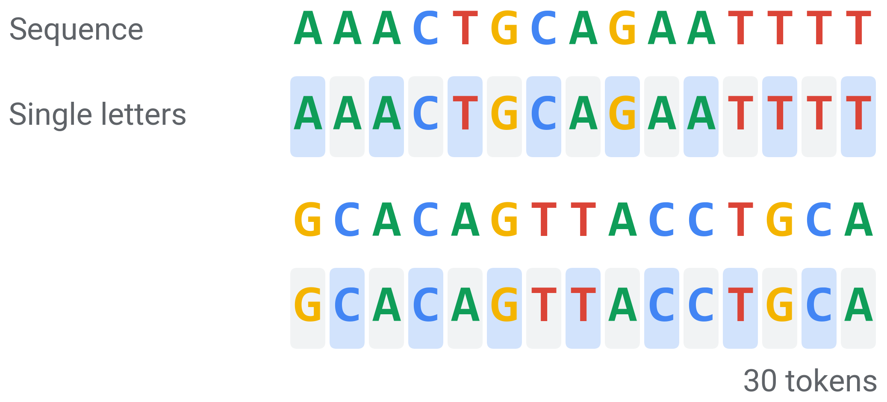
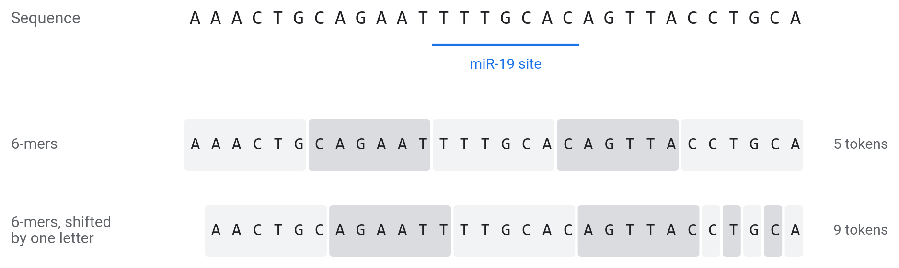
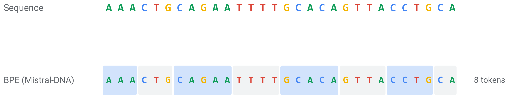
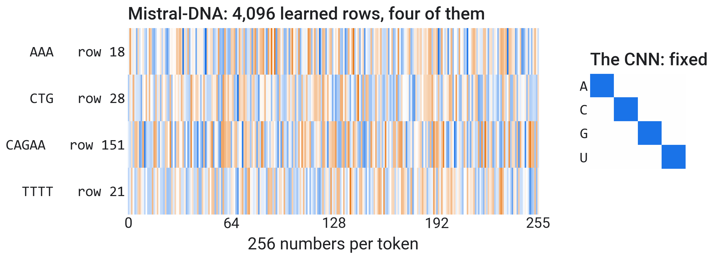
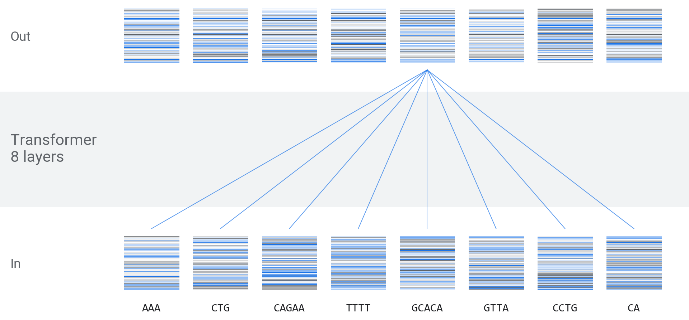
[CLS] and [SEP])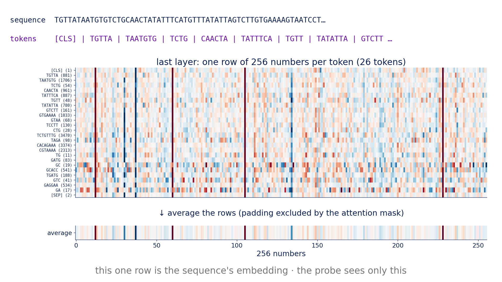
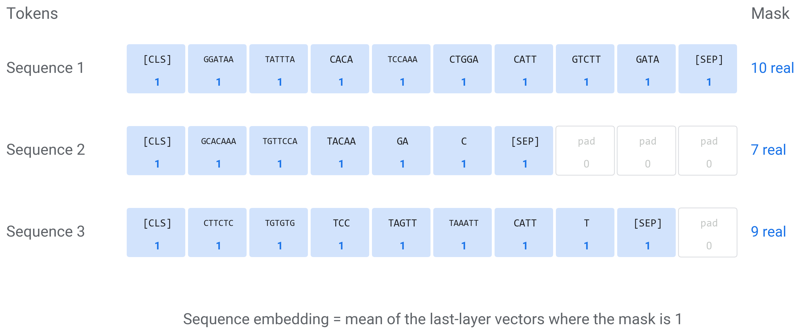
| Use | Head | Output |
|---|---|---|
| Next token | 256 → 4,096, softmax | probability of each token |
| Masked tokens | 256 → vocabulary, softmax | probability of each hidden token |
| Our task | average, 256 → 1, sigmoid | P(bound) |
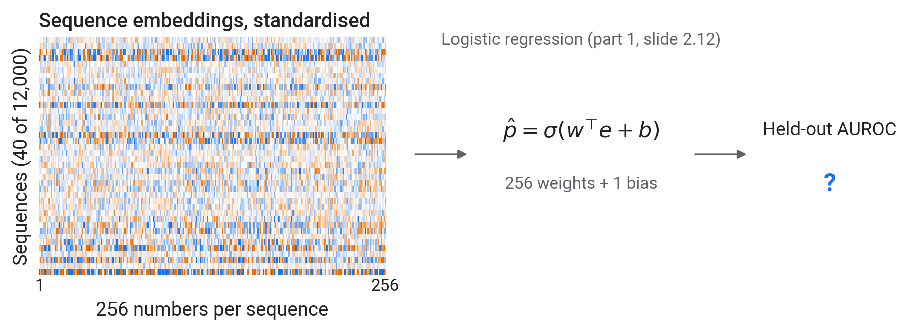
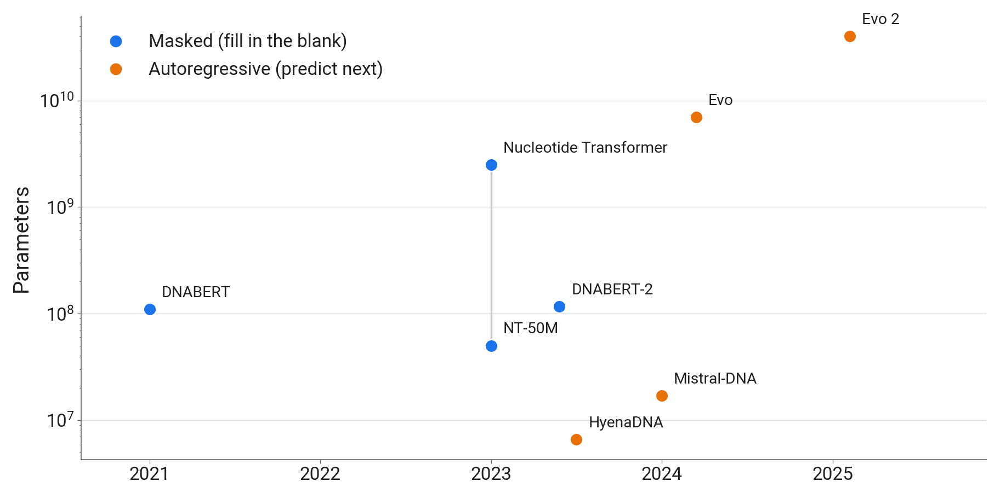
from transformers import AutoTokenizer, AutoModel
name = "RaphaelMourad/Mistral-DNA-v1-17M-hg38"
tok = AutoTokenizer.from_pretrained(name, trust_remote_code=True) # the token vocabulary
model = AutoModel.from_pretrained(name, trust_remote_code=True) # the weights
seq = "UGAUUUAUCAAG...".replace("U", "T") # the model reads DNA lettersOpen 02_foundation_models.ipynb.
| Step | Task | Check | Time |
|---|---|---|---|
| TODO-1 | embed: tokens, last layer, average over real tokens |
the test cell passes | 9 min |
| TODO-2 | probe_auc: standardise, then logistic regression |
the test cell passes | 5 min |
| live | pretrain a 105M model for 3 minutes | probe before and after | 6 min |
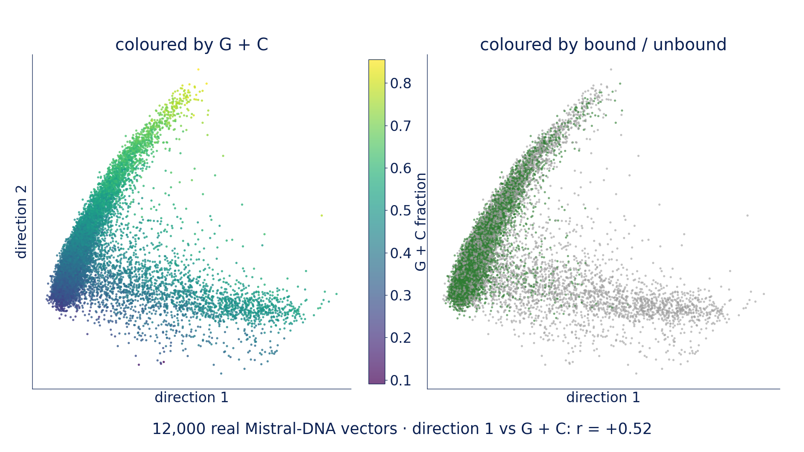
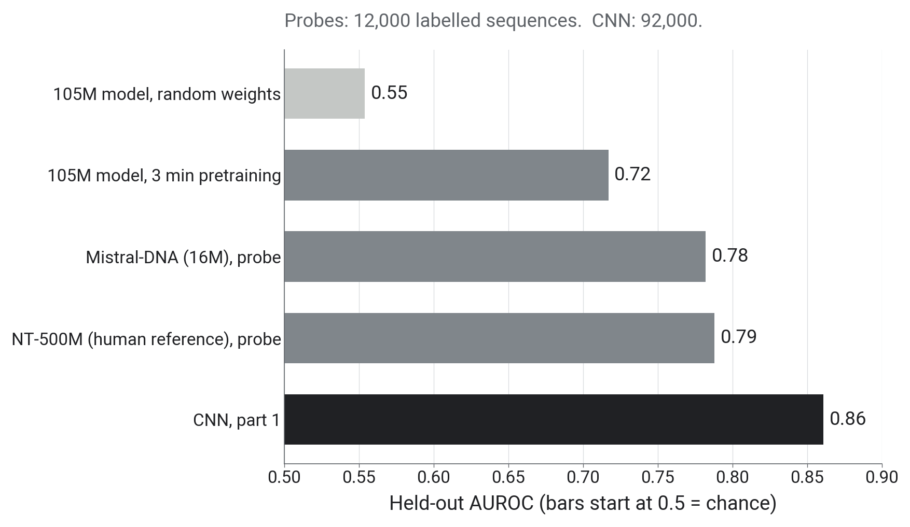
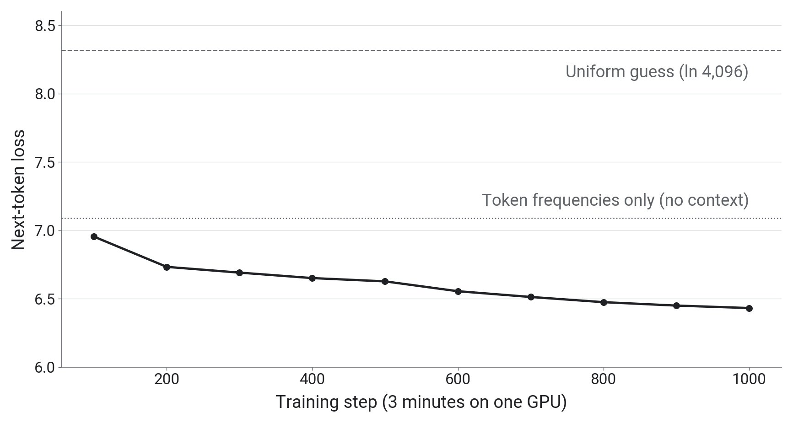